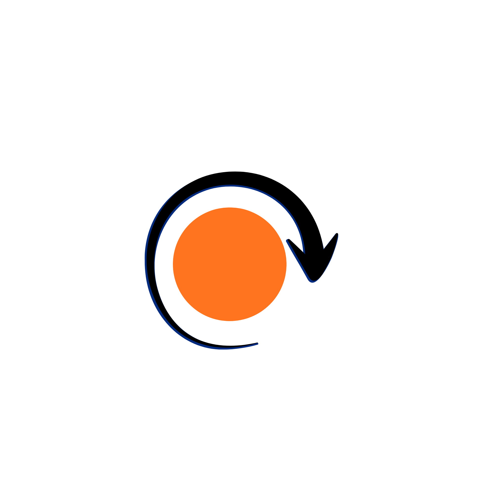

Execution CurveNote: This is a beta version
Contact: executioncurve@gmail.com if you have any questions, concerns, or feedback. Anything would be appreciated!
Execution Curve helps you understand the phase you're in, so you don't quit in the middle. A simple way to understand what’s happening when things feel unclear.